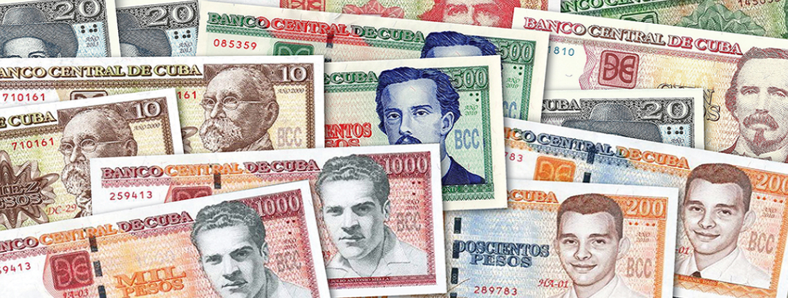

03.07.2022
Kde, ako a akým výhodným kurzom zmeniť peniaze ? Poďme sa na to spoločne pozrieť a vysvetliť si (:
Na letisku v Havane, tesne za kontrolou, stála zmenáreň , tak sme si rovno šli zmeniť peniaze, pretože sme sa dočítali, že s tým bude veľký problém lebo
Rozmeniť si stihla len kamoška, pretože sa k nám prihovoril okoloidúci pán, aby sme tu rozhodne nič nemenili, pretože nám dajú strašný kurz .. aby som bola presná, až 4-násobne menší, za aký by nám ponúkli miestni. Čo sa týka zmeny peňazí , ako takej, nikde sme sa nedokázali dopracovať, čo je vlastne dobrý kurz. Na internete sme si síce vedeli pozrieť , ako sa kurz oficiálne mení (cca k dnešnému dňu tj 3.7.2022 má hodnotu 1€ = 26,07 Kubánskeho pesa) , no za aký kurz nám zmenia domáci sme nemali ani tušenia.
Mysleli sme si teda, že kurz 1€ = 27 CUP (Kubánske peso), ktorý nám dali na letisku je dobrý, no opak bol pravdou. Stačí opustiť letisko a zrazu každý domáci ponúka zmenu peňazí, čo nás celkom zarazilo (miestni totiž eurá vnímajú aj ako investíciu do budúcna). Keďže inflácia rastie a ich mena je stále v pohybe, dá sa povedať, že domáci na turistoch radi skúšajú čo to dá a tak si určujú kurz sami, avšak dá sa zjednávať. Napríklad začali s kurzom 1€ = 80CUP ..my sme povedali, že je to málo a náš ´´osobný rekord´´ bol kurz 1€ = 110CUP.
Celá táto situácia bola pre nás strašne metúca, no záverom však bolo, že peniaze sme si meniť nemuseli vôbec. Jednak u nich oficiálne platia dve meny CUC a CUP.. a sami doteraz nechápeme rozdiel, pretože nám tvrdili, že je to rovnaké.. dalším, ale dôležitejším faktorom bolo, že eurom sme dokázali zaplatiť všade a niekedy aj lepším kurzom ako v pesách. Dokonca sme boli v obchode, kde miestni mohli zaplatiť v pesách no od nás vyžadovali platbu v eurách .. a ak sme nemali museli sme kartou (:
Rady na záver: